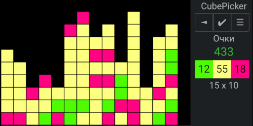

SpiderBasic, Андроид
CubePicker
Назначение
Игра - уничтожь кубики.

Взаимосвязанные
CubePickerОписание
Уничтожать кубики зарабатывая очки. Чем больше кубиков будет уничтожено тем больше очков в квадратичном увеличении, поэтому надо строить фигуру из кубиков чтобы сорвать куш, который в разы превысит обычное удаление кубиков.